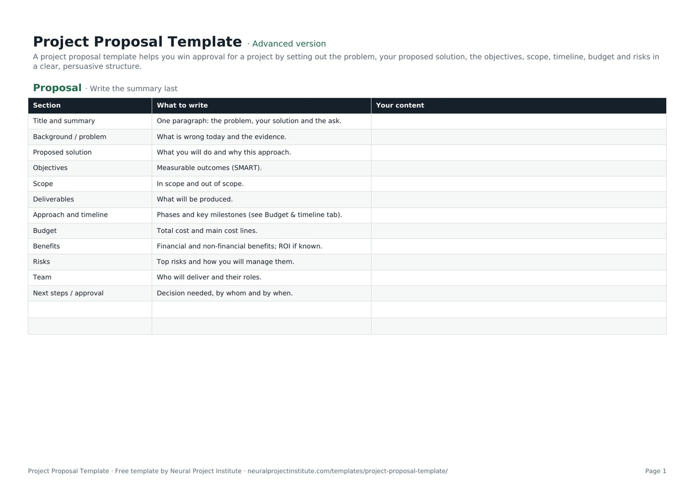

Templates · Business & strategy
Free Project Proposal Template (Google Sheets, Excel, PDF)
A project proposal template helps you win approval for a project by setting out the problem, your proposed solution, the objectives, scope, timeline, budget and risks in a clear, persuasive structure.

Free download · no sign-up
Get the project proposal template
Pick your level and format: Google Sheets, Excel or a print-ready PDF. Spreadsheets include dropdowns, formulas and sample rows you can overwrite.
Project Proposal Template preview
| Section | What to write | Your content |
|---|---|---|
| Title and summary | One paragraph: the problem, your solution and the ask. | |
| Background / problem | What is wrong today and the evidence. | |
| Proposed solution | What you will do and why this approach. | |
| Objectives | Measurable outcomes (SMART). | |
| Scope | In scope and out of scope. | |
| Deliverables | What will be produced. |
Sample rows are examples: replace them with your own.
What's included
- 12 proposal sections with prompts
- Budget and timeline tab with automatic contingency and total
- Proposal: Section, What to write, Your content
- Budget & timeline: Phase / item, Start, End, Cost ($), Notes
How to use the project proposal template
- Define the problem with evidence before proposing a solution.
- Describe the solution, objectives and scope, including exclusions.
- Fill in the Budget & timeline tab; contingency and total calculate automatically.
- State benefits and risks honestly.
- Write a one-paragraph summary and a clear ask, then share for approval.
Tips for getting the most from it
- Lead with the decision-maker's priorities.
- Quantify benefits wherever possible.
- Keep it short; attach detail as appendices.
- Turn an approved proposal into a project charter.
Learn more
Frequently asked questions
What is a project proposal template?
A project proposal template is a ready-made outline for asking approval or funding for a project, covering the problem, solution, objectives, scope, timeline, budget and risks.
Is this project proposal template free?
Yes. The project proposal template is free in Google Sheets, Excel and PDF.
What should a project proposal template include?
Summary, background, solution, objectives, scope, deliverables, timeline, budget, benefits, risks, team and next steps.
How long should a project proposal be using this project proposal template?
Two to ten pages for most internal proposals; client proposals may be longer.
Can I use the project proposal template for clients?
Yes. Add pricing, terms and case studies to turn it into a client proposal template.
What is the difference between a project proposal template and a business case template?
A project proposal sells the idea; a business case analyses options, costs and benefits in depth.
Is there a simple project proposal template?
Yes. For a simple project proposal, complete only the summary, problem, solution, budget and next steps.
Can I use the project proposal template in Word?
Copy the sections from the PDF or spreadsheet into Word or Google Docs.
How do I write a persuasive project proposal with this project proposal template?
Lead with the problem and its cost, show clear benefits and make a specific ask.
Can the project proposal template be used for grant or program proposals?
Yes. Adapt the sections to the funder's criteria for a program proposal.
What is the difference between the beginner, advanced and expert project proposal template?
The beginner project proposal template keeps only the essential columns on one tab; the advanced version is the full template with every tab, dropdown and formula; the expert version adds instructions, a dashboard that summarises your data automatically, status colours and a revision history.